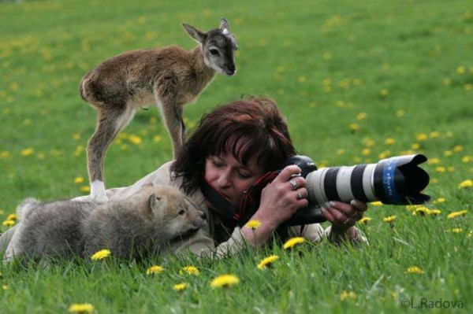
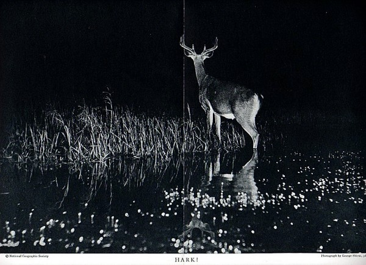
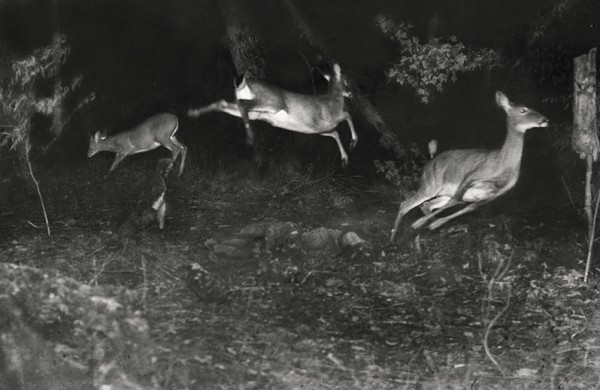

-
Shark Week
by Margaret Eby February 21, 2011
Developing Animals: Wildlife and Early American Photography
Matthew Brower, Minnesota 2011In the summer of 1906, National Geographic was in a state of uproar. The magazine’s pioneering editor, Gilbert Henry Grosvenor, despite protests from the board and editorial staff, had taken the magazine in a radical new direction. Rather than the magazine’s typical format—dense text punctuated by a few illustrations, the July issue included 74 photographs, taken from a former Congressman’s recent exhibition, and very little in the way of actual writing. Two members of the society’s board quit in disgust, claiming that Grosvenor had “turned the magazine into a picture book.” They could have saved their breath. The July issue was one of the most popular of the magazine’s history, cementing the role of photography in nature-focused publications. The photographer at the center of the controversy, George Shiras III, became one of the pioneers of American wildlife photography.
Shiras’ subject—deer caught in their natural habitat—wasn’t new. As Matthew Brower extensively proves in the opening chapter of Developing Animals: Wildlife and Early American Photography, animal photography dates back almost to the invention of the camera. In the 1850s, Victorian photographers, lacking the technology to capture live animals on film, took pictures of stuffed stags posed in woodland settings. By the time Shiras began photographing animals in the 1890s, dry-plate film, focal-plane shutters, and other innovations had made it possible to take pictures of subjects who weren’t willing to sit still for several hours. For the first time, images of animals outside of captivity became widespread. The first pictures of animals in the wild were taken by hunters and other gamesmen, who snapped photos of their conquests. Though for some of these camera-hunters the photograph itself was sufficient trophy, others simply snapped pictures of their prey before killing it. (One particularly dedicated hunter attached a camera to the end of a rifle in order to get pictures of his game as it was being shot.) Shiras, an avid woodsman, self-identified as a camera-hunter. Like other camera-hunters, he used tracking techniques to obtain the first photos of deer at night. Shiras would whistle to the deer to get them to turn around, blast them with a jacklight, open the shutter, and let loose with an enormous magnesium flash.
The resulting photos look today like poorly-done Xeroxes—high-contrast images with huge swaths of darkness, the light from Shiras’ jacklight reflecting from the terrified deer’s corneas—but they mark a shift in the way Americans thought about wildlife photography. Before Shiras’ series, photographs of wild game were inextricable from the photographer’s reputation as a hunter. But Shiras’ work was heralded in salons in Paris and art shows for its aesthetic prowess, even earning a name-drop in one of Ernest Hemingway’s short stories. The photographs no longer functioned as trophies, but as records of animal life, glimpses into the natural world unsullied by humans. And this, for Bower, is where the trouble begins.
Though Shira’s work bears a clear imprint of human intervention—the frozen looks on the deer’s faces, the imposition of artificial light on a night-time habitat—his photographs pioneered a kind of wildlife photography that detached the human sphere from animals entirely. “The change from camera hunting to wildlife photography has been marked by a change in the function of animal photography from asserting the presence of the photographer to denying it,” Bower explains. This idea rankles, and most of Developing Animals circles around how and why we present animals in roughly the same way Toy Story presents Mr. Potato Head dolls: They’re only really alive when we’re not there. “According to the logic of the wildlife photograph, the real animal is not the one we see,” Bower writes. The assumption is that animals in settings where humans interact with them—on safari or in zoos—act differently than they would in the wild. Their behavior is different than when we aren’t watching them. He traces the origin of this separation to the Garden mythos, the idea that, since Eden, humans have ruined everything they’ve touched. And so, wildlife photographers must act as part-spy, part-magician, collecting information about animals that would otherwise be inaccessible to us.
Every staple of wildlife photography today—from the photographic blind to the telephoto lens—is, in Bower’s view, designed to maintain the line between wild animal and human. Bower has a particular grievance with the photographic blind, which he describes as a “reverse panopticon;” “a machine for controlling the relation between seeing and being seen.” The power dynamic of visibility versus invisibility is at the heart of wildlife photography. The whole idea is that we see animals even as we can’t see them, and if the animals could see you, the whole enterprise would somehow be a sham. “Wildlife photographs construct their viewers as unnatural…they suggest that our presence makes them inauthentic.” Because the way we see wild animals is, unless you happen to live in a national park, primarily shaped by photographs, it follows that wildlife photography has an enormous role in human-animal relationships. Ever since Shiras, the overwhelming message of wildlife photography has been simple: Photographs offer you access to the secret, real lives of animals. Any other animal-human interactions are contrived and false.
This is, of course, simply untrue. While the conservationist aspect of this way of thinking may benefit wildlife and their habitats, the artificial separation between humans and animals is patently false. Brower’s conclusion is apt, though you have to wade through several dense chapters of clunky academic writing to get to it: “I want to insist that human beings are part of nature and that…it is a conceptual mistake to accept the framing of wildlife representations that nature is something we can only authentically encounter from the outside.” In other words: forget about Eden.
Though Developing Animals gives a thorough—at times, excessively thorough—account of 19th and early 20th-century American attitudes to animals as shown through photography, it stops short before the explosion of wildlife-based entertainment of the last 40 years. Though most television programs maintain the distance between humans and animals—unless a human is actively being eaten by animal—there has been a recent uptick in programming that focuses on human-wildlife interaction. Ever since the dazzling, outrageously expensive nature documentary series Planet Earth became a staple in every college stoner’s DVD collection, our taste for gently narrated wildlife shows has been piqued. Channels like Animal Planet and Nat Geo: Wild have been competing to provide the next exciting nature show, combining tropes of reality television with animal-watching. Shows like Swamp People, which traces a group of Cajun alligator-hunters, and River Monsters, which follows an extreme angler, are a conceptual return to the days of camera-hunting and Shiras’ less-than-sporting techniques.
In this, what Developing Animals elucidates is a still more interesting shift: not only do we now document wildlife as if they were people, we’ve begun to document people as if they were wildlife. The techniques of wildlife photography are the new tropes of reality programming: you don’t really know who someone is unless you’ve seen them followed around by a camera for several weeks. The implied separation between the cast of Jersey Shore and its audience is as similarly problematic as the assumption that humans and animals live in separate realms. Of course, unlike baboons and meerkats, Snooki and the Situation are perfectly able to communicate and consent to photography. Whether either group is acting authentically is another question.
Wildlife photography and reality television at their best serve the same function: They give us a chance to glimpse things we might never have gotten to, and they remind their audience how varied, strange, and wonderful the world is. National Geographic now serves not only as a dazzling compendium of photography, but as a reminder of just how much life there is out there. The folly in both is to pretend that the person behind the camera doesn’t exist. No matter how pristine those tigers appear, there was still a person there, somewhere, taking the picture. Even when we don’t interact with them directly, the habitats of animals and humans are inextricably linked, a fact that usually only gets attention when one species or another is dying thanks to poaching or acid rain or logging in the rainforest. What Bowers shows in Developing Animals is that, despite the distance imposed between humans and animals in wildlife photography, what we’re really recording is ourselves.